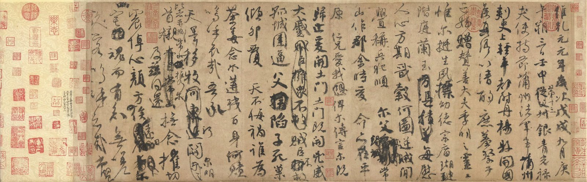

01
顏真卿 · 唐
行書 · 稿本
《祭侄文稿》血泪凝成的笔墨
一篇在悲愤与泣血中写成的草稿，涂改纵横处，正是书法最真切的情绪痕迹。

「賊臣不救，孤城圍逼，父陷子死，巢傾卵覆。」
乾元元年，颜真卿派人到河北寻回侄子颜季明的头骨，写这篇祭文的时候，他并不在作文，而是在哭。全篇二十三行、二百三十四字，涂抹与改笔全都留在纸上：写到「父陷子死」一句，笔势由行入草，墨色枯下去，速度压过了控制。它不是一件被设计过的作品，却因此成了「天下第二行书」——元代鲜于枢的判断，至今无人推翻。安史之乱里，颜杲卿、颜季明父子守常山城破遇害，颜氏一门死者三十余口；这卷纸上的每一次停顿，都是命案现场的回声。
#顶纸涩行